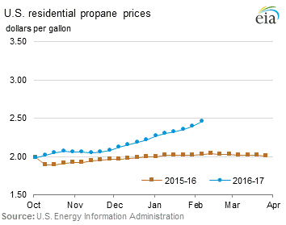
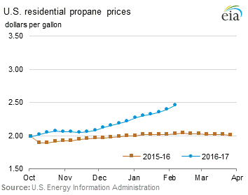

Release date: February 8, 2017 | Next release date: February 15, 2017
Hydrocarbon gas liquids by rail data adds transparency to rapidly changing markets
EIA recently added information on rail movements of propane, propylene, normal butane, and isobutane to its monthly petroleum data. These four products make up the majority of hydrocarbon gas liquids (HGL) moved by rail. This data adds transparency to market supply and demand dynamics for regions that are a source or destination for these products. Meanwhile, the growth in HGL-by-rail highlights market changes resulting from increased U.S. HGL production.
HGL-by-rail data are available for propane, propylene, normal butane, and isobutane only. EIA has found insignificant quantities of ethane moved by rail, which requires cryogenic tanks and is almost exclusively moved by pipeline, while movements of butylenes and natural gasoline were difficult to discern from available data sources.
The release of HGL-by-rail data follows the previous release of data on rail movements of crude oil and biofuels. Like the previous series, HGL-by-rail data are developed using information provided by the U.S. Surface Transportation Board, with data starting in January of 2010 up to the latest release of the Petroleum Supply Monthly.
Each HGL product serves a different market with a unique set of supply and demand drivers reflected in rail movement data.
- Propane: Propane volumes moved by rail are the largest of the four HGL products, representing roughly half of all HGL by rail volumes. In the United States, propane is used mainly for space heating, as a feedstock for petrochemical plants, and, to a lesser extent, for agricultural applications and transportation. Propane’s use as a heating fuel is mainly responsible for the seasonal pattern in its consumption, which peaks in the winter.
- Normal butane: Normal butane is predominantly used by refiners and blenders as a gasoline blendstock. Refinery and blender net inputs of butane are highly seasonal because they are a function of gasoline production and gasoline Reid vapor pressure (RVP) specifications. Like propane, butane consumption peaks in the winter. Normal butane is the second largest category of HGL moved by rail.
- Isobutane: Isobutane, as well as propylene and butylene, is used in refineries to produce alkylate, which boosts octane levels in gasoline but has a low RVP. Because of its lower RVP, isobutane use in gasoline blending is less seasonal than normal butane.
- Propylene: Propylene is produced at either refineries or at petrochemical facilities. In petrochemical facilities, propylene is used primarily in the manufacturing of plastics and resins. Propylene represents the smallest volume of the four HGL-by-rail products.
Because U.S. HGL pipeline infrastructure has several limitations, rail movements of HGL have been an important part of the supply chain for years. Many HGL pipelines do not carry products that meet end use specifications (i.e. purity products), but rather a raw unprocessed mix of HGL referred to as y-grade. Pipeline infrastructure carrying purity products is not geographically widespread and lacks enough capacity to respond to seasonal surges in demand. Therefore, in many markets, rail and truck transportation provide the only means of product delivery.
PADD 5 (West Coast) is relatively isolated from the rest of the country and has no pipeline infrastructure to carry HGL from other regions or within the region. As a result, rail and truck are the only means of moving HGL into and within PADD 5 (Figure 1). For example, rail movements of propane into and within PADD 5 averaged 37,000 barrels per day (b/d) from January to November 2016, and were split roughly evenly among originations within PADD 5, from other U.S. regions, and from Canada.

With the significant growth in HGL production between 2010 and 2016 with the advent of combining horizontal drilling with hydraulic fracturing, movements of HGL by rail have increased in importance. Increased HGL production occurred in regions lacking sufficient pipeline capacity. This change required a reorientation of transportation infrastructure, with movements by rail being one of the most rapidly available and flexible options.
PADD 1 (East Coast) was traditionally a net recipient of HGL from other PADDs and, to a lesser extent, from abroad. As a result, HGL infrastructure on the East Coast was typically used to receive incoming supplies and distribute to local markets. Over the past six years, in-region net HGL production increased 147,000 b/d, or 243%, primarily in Pennsylvania and West Virginia. As a result of investments in rail-loading facilities and because rail was the only transportation method capable of accommodating the rapid growth in supply, HGL rail shipments originating in PADD 1 (including intra-PADD shipments) have increased from 16,000 b/d in 2010 to 113,000 b/d through November 2016.
In PADD 2 (Midwest), production of propane, propylene, normal butane, and isobutane nearly doubled, up 277,000 b/d since 2010 to 573,000 b/d in the first 11 months of 2016. This growth took place in areas such as the Bakken in North Dakota and portions of the Marcellus and Utica in Ohio, where pipeline capacity to ship HGL was previously limited. Since 2010, changes in pipeline infrastructure were able to accommodate much of this growth. HGL pipeline flows to PADD 3 alone increased by approximately 201,000 b/d. At the same time HGL shipments by rail originating in PADD 2 (including intra-PADD movements and to Canada) also increased, nearly doubling to 184,000 b/d between 2010 and the first 11 months of 2016.
In PADD 3 (Gulf Coast), home to most of the U.S. capacity to process, export, and store HGL, as well as the bulk of U.S. petrochemical demand, HGL-by-rail flows play a modest but increasing role. Growing exports (to foreign markets) and petrochemical demand for HGL have been largely supplied by a combination of in-region production and increased receipts from other regions by pipeline and rail. Exports of HGL from PADD 3 increased by 674,000 b/d since 2010 to 782,000 b/d during the first 11 months of 2016. The increased exports was supplied by an increase of 378,000 b/d of in-region HGL production, and a 270,000 b/d increase in pipeline receipts from PADD 2 and PADD 4 over the same time period. PADD 3 gross rail receipts of HGL from other PADDs also increased, averaging 93,000 b/d during the first 11 months of 2016, up 34,000 b/d since 2010 (Figure 2).
U.S. HGL-by-rail movement volumes through the first 11 months of 2016, including shipments to and from Canada, reached 426,000 b/d. Over the same time, fuel ethanol rail shipments averaged 637,000 b/d, and crude by rail shipments, after peaking in 2014 at over 1 million b/d, were down to 478,000 b/d Rail movements of HGL are likely to continue expanding as production, exports, and new sources of demand grow the market in the absence of major planned pipeline capacity expansions.. In contrast, expanded crude oil pipeline capacity and narrower regional price differences limit the economics of transporting crude oil by rail, while demand for ethanol shipments may be limited by growth in U.S. gasoline consumption.
U.S. average regular gasoline and diesel retail prices fall
The U.S. average regular gasoline retail price fell less than one cent from the previous week to $2.29 per gallon on February 6, up 53 cents from the same time last year. The East Coast, Rocky Mountains, and Gulf Coast prices each fell two cents to $2.30 per gallon, $2.23 per gallon, and $2.07 per gallon, respectively. The West Coast price increased two cents to $2.70 per gallon, and the Midwest price increased one cent to $2.18 per gallon.
The U.S. average diesel fuel price fell less than one cent and remained at $2.56 per gallon on February 6, 55 cents higher than a year ago. The Midwest and Gulf Coast prices each fell one cent to $2.49 per gallon and $2.40 per gallon, respectively. The East Coast and Rocky Mountain prices each fell less than one cent and remained at $2.62 per gallon and $2.52 per gallon, respectively. The West Coast price increased one cent to $2.86 per gallon.
Propane inventories fall
U.S. propane stocks decreased by 6.9 million barrels last week to 55.8 million barrels as of February 3, 2017, 19.0 million barrels (25.4%) lower than a year ago. Gulf Coast, East Coast, Midwest, and Rocky Mountain/West Coast inventories decreased by 4.7 million barrels, 1.1 million barrels, 0.8 million barrels, and 0.2 million barrels, respectively. Propylene non-fuel-use inventories represented 6.4% of total propane inventories.
Residential heating fuel prices increase
As of February 6, 2017, residential heating oil prices averaged $2.64 per gallon, nearly one cent per gallon higher than last week’s price and almost 55 cents per gallon higher than last year’s price at this time. The average wholesale heating oil price is $1.73 per gallon, four cents per gallon higher than last week and just over 60 cents per gallon higher than a year ago.
Residential propane prices averaged nearly $2.46 per gallon, up six cents per gallon from last week and almost 43 cents per gallon higher than a year ago. Wholesale propane prices averaged nearly $0.99 per gallon, just over four cents per gallon higher than last week and almost 52 cents per gallon higher than last year's price.
For questions about This Week in Petroleum, contact the Petroleum Markets Team at 202-586-4522.
Retail prices (dollars per gallon)


 

| Retail prices | Change from last | ||
|---|---|---|---|
| 02/06/17 | Week | Year | |
| Gasoline | 2.293 | -0.003 | 0.534 |
| Diesel | 2.558 | -0.004 | 0.550 |
| Heating Oil | 2.640 | 0.009 | 0.548 |
| Propane | 2.457 | 0.063 | 0.425 |
Futures prices (dollars per gallon*)

| Futures prices | Change from last | ||
|---|---|---|---|
| 02/03/17 | Week | Year | |
| Crude oil | 53.83 | 0.66 | 22.94 |
| Gasoline | 1.554 | 0.027 | 0.561 |
| Heating oil | 1.665 | 0.046 | 0.606 |
| *Note: Crude oil price in dollars per barrel. | |||
Stocks (million barrels)


| Stocks | Change from last | ||
|---|---|---|---|
| 02/03/17 | Week | Year | |
| Crude oil | 508.6 | 13.8 | 37.9 |
| Gasoline | 256.2 | -0.9 | 0.6 |
| Distillate | 170.7 | 0.0 | 9.8 |
| Propane | 55.772 | -6.876 | -19.026 |